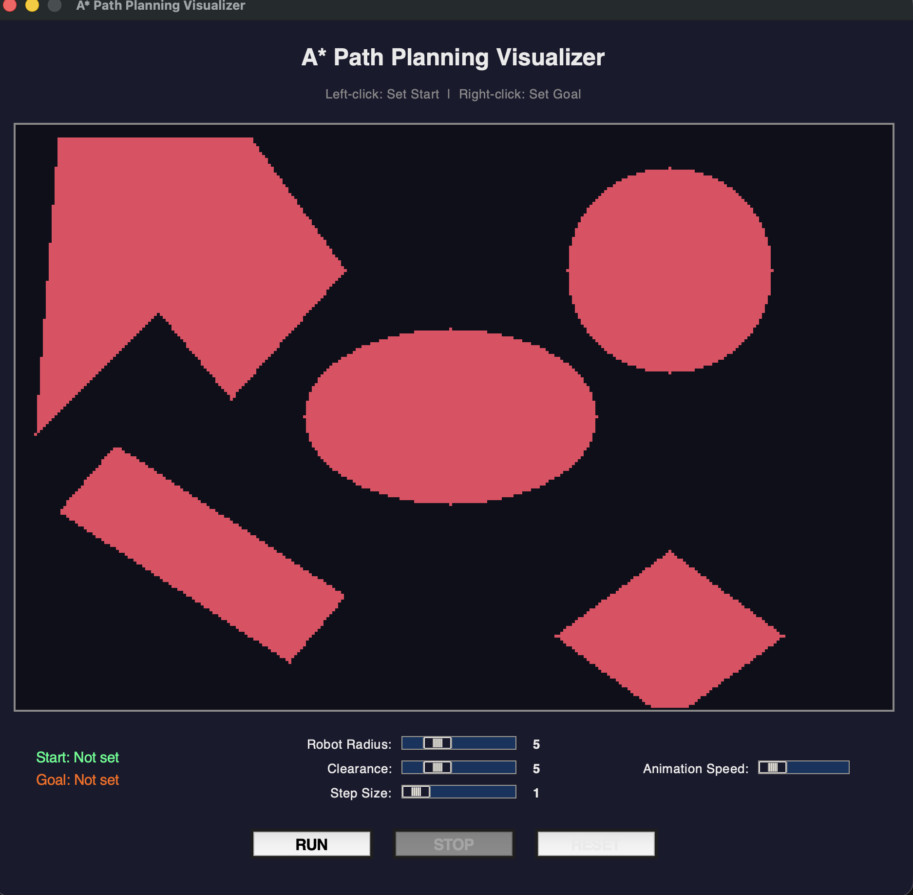
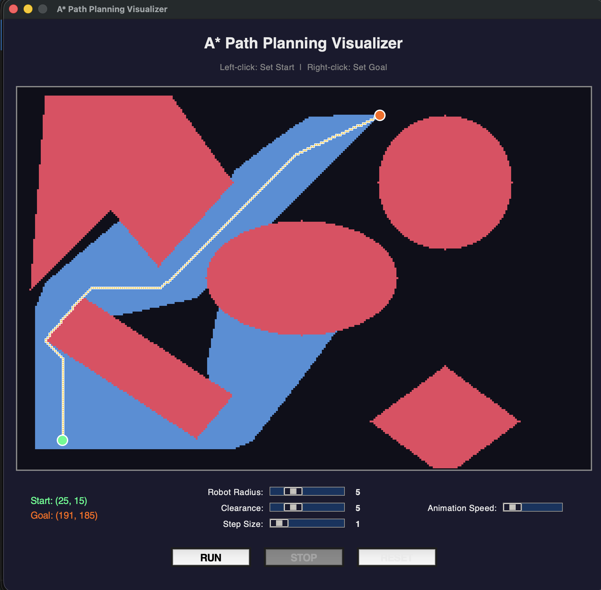

ENPM 661 · Robot Motion Planning
Path Planning
for Autonomous
Vehicles
Dijkstra's weighted-graph search navigating a 300×200 grid
with terrain costs, 7 obstacles, and real-time GUI visualization.
Dijkstra's Algorithm
Weighted Terrain
8-Connected Grid
Interactive GUI
01 — Problem Statement
Navigate. Avoid. Optimise.
The Challenge
- Navigate a 300 × 200 grid from any start to any goal
- Avoid 7 analytic obstacles: circle, ellipse, triangles, rhombus, rod
- Respect robot radius + safety clearance (configurable)
- Prefer paved roads — terrain cost is part of the problem
- Find the globally optimal weighted path
Why AV-Specific?
- Real vehicles don't treat all drivable space equally
- Road bandwidth: smooth, predictable, cheap
- Open space: uncertain surface, moderate cost
- Sidewalks & rough terrain: dangerous, expensive
- Planner must balance geometry AND cost
Key insight: The shortest geometric path ≠ the cheapest weighted path.
Dijkstra finds the true optimum in the weighted graph.
02 — Algorithm Theory
How Dijkstra Works
01
Assign cost ∞ to every node. Set start cost = 0. Push start into the min-heap.
02
Pop the node with the lowest cumulative cost from the heap (lazy-deletion for stale entries).
03
If it's the goal → done. Dijkstra guarantees this is the optimal path. Backtrack via parent pointers.
04
Examine all 8 neighbours (4 straight + 4 diagonal). Compute edge weight = base × avg_terrain × step_size.
05
If new_cost < neighbour's best, update cost + parent, push to heap. Repeat from step 02.
weight = base_move × avg_terrain(from, to) × step_size
straight: base = 1.0 | diagonal: base = √2
straight: base = 1.0 | diagonal: base = √2
Dijkstra Cost Function
f(n) = g(n)
no heuristic term — pure cumulative cost
g(n) = cost from start → n
w(u,v) = base × terrain(u,v) × step
relax: if g(u) + w(u,v) < g(v) → update g(v)
w(u,v) = base × terrain(u,v) × step
relax: if g(u) + w(u,v) < g(v) → update g(v)
GUARANTEE: When the goal is popped from the heap, g(goal) is the globally optimal weighted cost.
03 — Terrain Cost Model
Three Cost Zones
Road
×1.0
Paved lanes — lowest cost. The AV actively seeks these rows even if it means a geometric detour.
Rows: 30–50 · 90–110 · 150–170
▸ Preferred route
Open Space
×2.5
Parking lots and plazas — moderate cost. Acceptable when road routing adds too much distance.
All rows not in road or off-road zones
▸ Acceptable
Off-Road
×6.0
Sidewalks and rough terrain — highest cost. The AV will take large detours to avoid these zones.
Rows: 1–20 · 60–80 · 120–140 · 180–200
▸ Avoid
Single source of truth: Zone boundaries defined once in
utils.py · imported by gui_config.py · visual canvas and algorithm always in sync.
04 — Obstacle Map
7 Analytic Shapes
SHAPEGEOMETRYBOUNDARY METHOD
Circle
Centre (150, 225), radius 25
dist = r² − (r_obs + c_r)² ≤ 0
Ellipse
Centre (100, 150), semi-axes 20 × 40
Normalised Euclidean ≤ 0
Triangle 1
Vertices ≈ (120,20) (150,50) (185,25)
Half-plane ∩ — all f ≤ 0
Triangle 2
Vertices ≈ (150,50) (185,25) (185,75)
Half-plane ∩ — all f ≥ 0
Rhombus
Centre (25, 225), 4 corners
4 half-planes — all f ≥ 0
Rectangle
Tilted diamond near row 75, col 150
4 half-planes — all f ≤ 0
Rod
Diagonal bar, rows 30–76, cols 30–95
4 half-planes, mixed signs
All obstacles inflated analytically by c_r = clearance + radius before path validation — exact boundary, zero discretisation error.
05 — Architecture
Five-Module Design
utils.py
Dijkstra class — boundary checks, 8-directional search, terrain costs, lazy-deletion heap, CLI video export.
Owns
ROAD_ROWS / OFFROAD_ROWS — single source of truth for zone boundaries.
gui_config.py
All visual constants: colors, grid size, slider ranges, defaults. Imports zone boundaries from
utils.py
and derives TERRAIN_ZONES automatically — no duplication risk.
gui_canvas.py
PathCanvas (subclass of tk.Canvas) — terrain shading, inflated obstacle scan (60k cells),
explored cells per animation frame, final path, start/goal markers.
gui.py
DijkstraGUI — wires sliders, buttons, canvas, frame-by-frame animation loop.
150 ms debounce on slider redraws. Keyboard shortcuts: Enter/Esc/R. Entry point via
main().
dijkstra.py
CLI wrapper — prompts for inputs, validates boundary & obstacle, runs search, exports
dijkstra_path.avi.
All logic guarded by if __name__ == "__main__":.
06 — GUI Demonstration
Interactive Visualizer

Screenshot1.png not found
Fig 1 — Obstacle map with terrain cost zones

Screenshot2.png not found
Fig 2 — Exploration (blue) + optimal path (teal)
Left-clickSet Start
Right-clickSet Goal
RUN / EnterStart search
STOP / EscCancel animation
RESET / RClear all
SlidersRadius · Clearance · Speed
07 — Algorithm in Action
Live Dijkstra Search
Start
Goal
Explored
Optimal Path
Obstacle
This mini-grid replays automatically · Click the canvas to restart
08 — Results & Analysis
Performance Metrics
~215
Weighted Distance
terrain-weighted units
14k–28k
Nodes Explored
depends on start/goal
180–260
Path Length
nodes on optimal path
<3s
Runtime
standard laptop, step=1
Key Observations
◈Path bends through road bands even when a straight diagonal across open space looks shorter geometrically
◈×6.0 off-road zones create visible detours — the AV treats them like walls
◈Step size trades resolution for speed: step=1 → 28k nodes · step=5 → ~3k nodes
◈
defaultdict cuts memory from 180k pre-allocated entries to O(visited) — instantiation is near-free◈150 ms debounce on obstacle redraws eliminates 60k canvas ops per slider tick
09 — Conclusions
What We Proved.
✓ Conclusions
- Dijkstra finds the globally optimal terrain-weighted path — f(n) = g(n) guarantees optimality
- Three-tier terrain model effectively steers the AV onto paved roads
- 7 analytic obstacle shapes with configurable robot radius + clearance
- Interactive GUI provides real-time exploration & path animation
- defaultdict + lazy-deletion heap keeps memory and runtime efficient
- Single source of truth prevents algorithmic / visual drift
— End of Presentation
Thank
You.
⌂
GITHUB REPOSITORY
▶
PRESENTATION RECORDING
Add your video URL here
Dijkstra's Algorithm
Weighted Terrain
8-Connected Grid
Interactive GUI
ENPM 661 — Robot Motion Planning · 2026